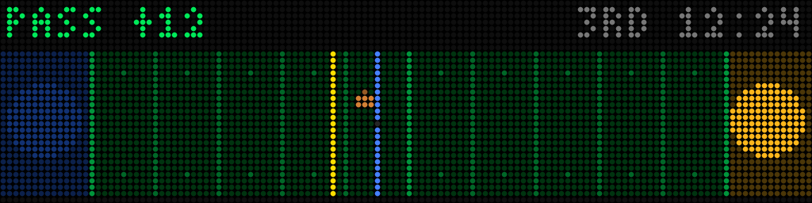
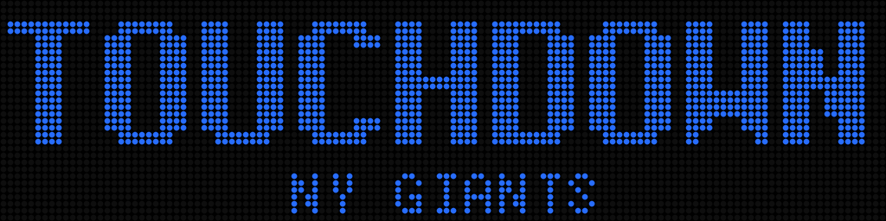
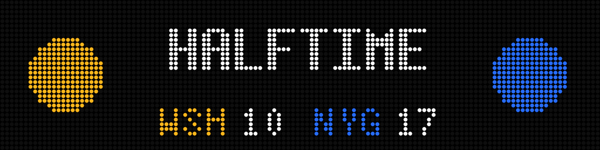
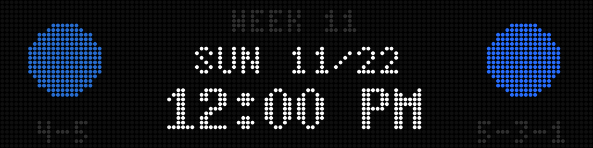
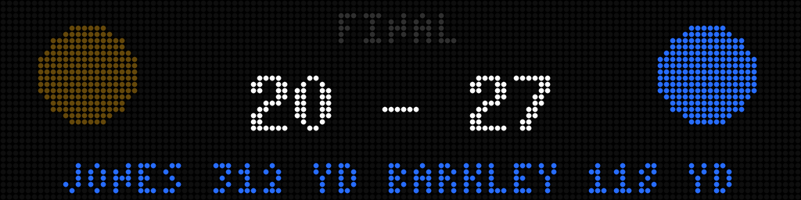
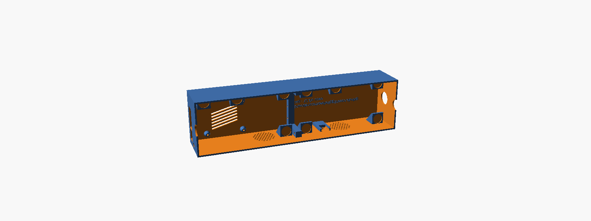

Two ways to get one
Parts kit
Everything you need to build it: two 64×32 P2.5 panels, adapter board, Raspberry Pi, power supply, and optional light sensor and button. Pricing to be announced.
Pre-assembled
The same hardware, built and tested, with the software image already flashed. Pricing to be announced.
We sell the parts, not the code. The software is free and open source (MIT).
Up and running in minutes
- Flash the image to an SD card.
- Power on. The board makes its own Wi-Fi network.
- Join it from your phone, pick your home Wi-Fi, choose your team.
Features
Live scores
Live games, finals, countdowns to the next puck drop or kickoff, and standings.
Goal horn
Plays when your team scores, with a goal screen on the panel.
Web admin page
Change teams, rotation, brightness and more from your phone.
Night mode
Dims on a schedule, but never during a game you care about.
Automatic updates
Update the software from the admin page.
Printable case
Open 3D-printable enclosure designs for Pi 4 and Pi 3B.
Football mode
Pick football in setup and the board follows your football team instead. Same hardware, same admin page.
Live game screens
Field view with down and distance, animated runs and passes, touchdown, field goal, turnover and halftime screens, and a coin toss at kickoff.
Between games
Kickoff countdown, game preview, final score with recap, bye week, division and conference standings, the week's scoreboard and your team's schedule.
Yours to tune
Choose and reorder the idle screens, how long each shows, and how long in-game screens stay up, all from the admin page.
Holidays
Thanksgiving and Christmas games get festive decoration in your team's colours.











Hardware and case

The enclosure files are in the repository.
Admin page

Interested?
Ordering isn't open yet. Follow the project on GitHub for updates.